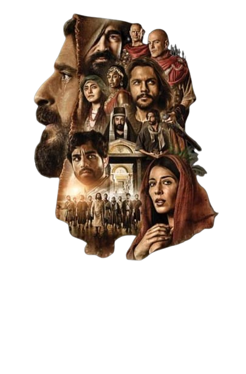

Na série The Chosen - Os Escolhidos, acompanha-se os principais momentos de uma grande narrativa religiosa. Em uma nova adaptação dos acontecimentos da Bíblia, na Galileia do século I, Jesus de Nazaré (Jonathan Roumie), um homem simples e de uma família humilde de carpinteiros, auxilia as pessoas à sua volta, independente de suas crenças, origens e aparência. Na companhia de 12 homens, escolhidos para serem seus discípulos, ele ampara os necessitados compartilhando palavras e ações de bondade por onde passa.
